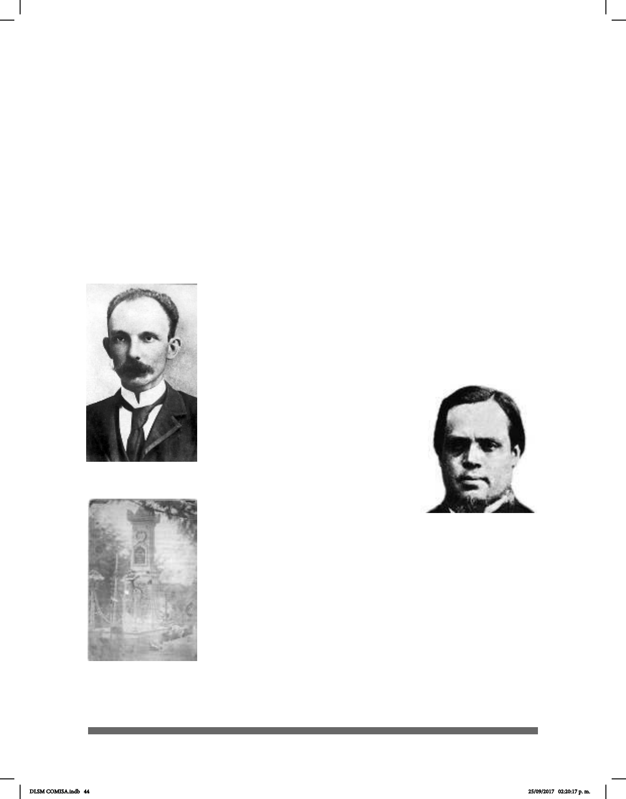

44
encuentra Ramón Isaac Alcaraz, quien nació en Chucándiro, Michoacán, el 3 de junio
de 1823. Fue abogado, político liberal, poeta y académico. A él se debe la propuesta de
crear la Escuela Nacional de Sordomudos.
El 31 de enero de 1880, ya en el gobierno del General Díaz se expide un nuevo reglamento
publicado en el Diario Ocial en el cual se señala que:
La enseñanza comprendía el programa completo de las escuelas primarias de educación
elemental; la articulación de las palabras y la lectura de éstas sobre los labios, el dibujo
lineal y artístico, a la vez el aprendizaje de ocio; cuando el alumno está capacitado se
le imparte educación superior; gramática, historia natural, en casos especiales: francés,
inglés y otros idiomas, logrando así los Sordomudos llegar a obtener títulos en letras y
ciencias. Las condiciones para que los alumnos fueran admitidos en la escuela eran las
siguientes: “No tener enfermedad contagiosa u orgánica que los inhabilite para el estudio;
estar vacunados si no hubieran sido atacados de viruela, o sujetarse inmediatamente a
esta operación que practicará el médico de la escuela; y tener siete
años cumplidos y no pasar de dieciocho (Saavedra, 1958).
En 1881 salió a la luz parte de la obra realizada por Huet, que fue
la creación de un Diccionario Universal de Señas para Uso de
los Sordomudos “con el objetivo de lograr la unicación de este
sistema de comunicación, según cita Susana Huet. Sin embargo,
hasta el momento se desconoce el paradero de dicha obra pero
se sabe de su existencia por los datos
aportados por Susana Huet” (Cruz,
2008).
En 1882 se dio autorización al profesor
José María Márquez para que realizara
visitas a las escuelas europeas a n de
conocer el método de enseñanza y de
aprenderlo para aplicarlo en la educación
mexicana. Las indicaciones eran por
demás pormenorizadas: que el método
de enseñanza de la mímica utilizado
hasta ese momento se cambiara y que se implementara el
método alemán, también conocido como método oral puro, lo que
trajo nuevos retos y reinterpretaciones. Gracias a José Urbano
Fonseca, se logró que al profesor Márquez le asignaran un espacio
en un viejo convento, de manera que su proyecto comenzó con
tres alumnos. Los niños se examinaron exitosamente, por lo que
Huet obtuvo nanciación pública para continuar con su labor.
Eduardo Huet murió en enero de 1882 en la Ciudad de México,
y sus restos fueron sepultados en el Panteón de Dolores. “La
historia de este personaje y de la ENS es del dominio de la
comunidad sorda y transmitida de generación en generación a
sus miembros”. (Cruz, 2009)
Ramón Isaac Alcaraz
José Julián Martí Pérez
Tumba del Profesor
Eduardo Huet en el
Panteón de Dolores
DLSM COMISA.indb 44 25/09/2017 02:20:17 p. m.